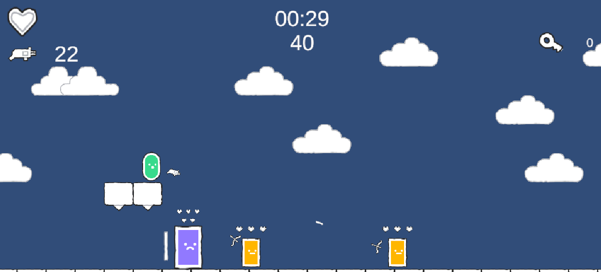
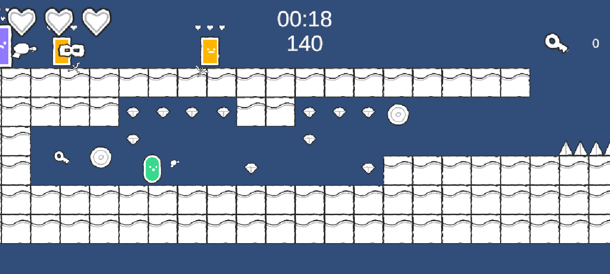
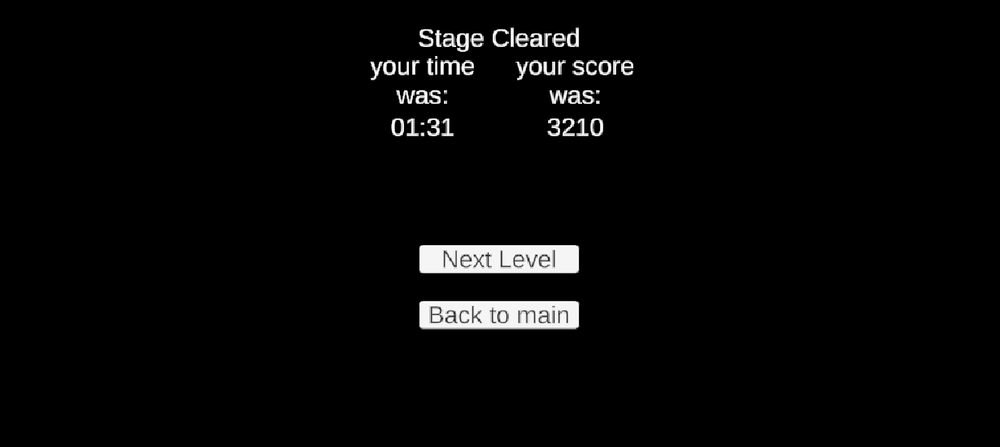

This Run & Gun game was made as a school project which was fully focused on the coding part and I was allowed to leave the art part out of the picture. Because of the full focus on coding I was able to make a simple but great working game. The game has a simple concept. You have to get to the end of the map with as much points as possible. Points are gained by killing enemies, picking up gems, shooting targets placed through the map and if you picked up coins your score will be multiplied by the amount of coins you have picked up. There are 3 types of enemies each has his own way of attacking. There is the big shield enemy which always holds his shield towards you and walk towards you, the small enemy is very fast and wil explode itself when it is close by you and the static enemy will always look towards you and shoot arrows towards you. You have got 3 lives, if you lose all lives you die and have to start over. The player can choose between 2 weapons the first one will shoot the bullet straight towards where the player is aiming. The second weapon will also fly towards the players aim but when it is above the enemy it flies straight down.